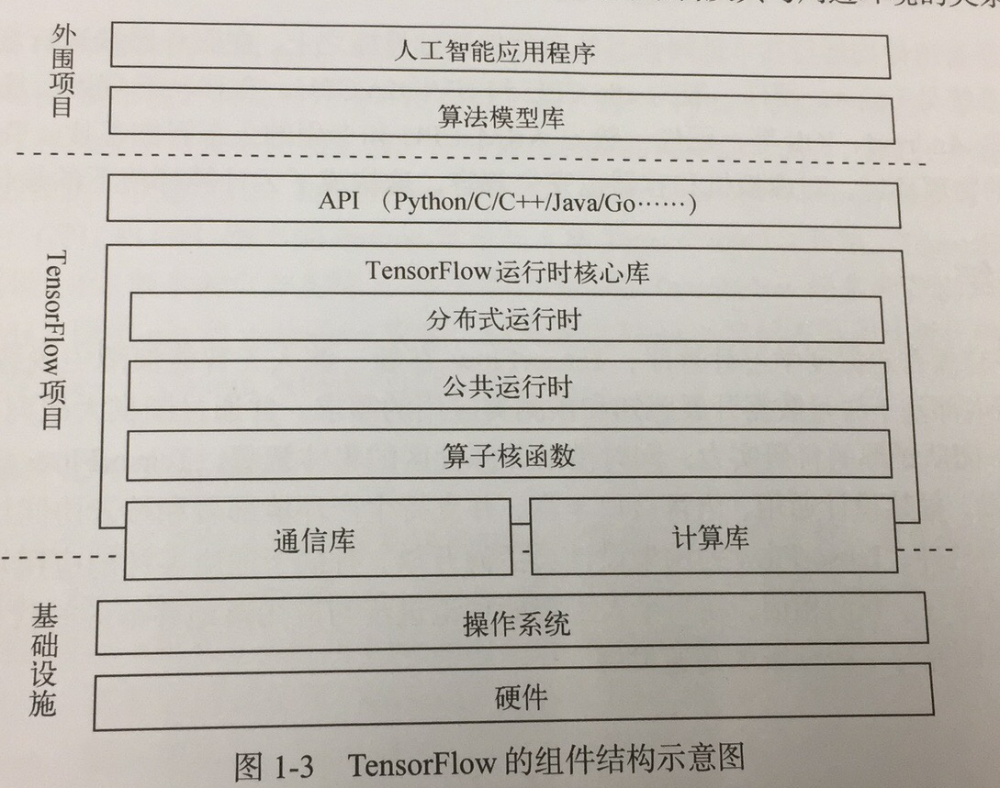

本章对TensorFlow进行了一些非常基本的介绍，主要包括以下内容：
- TensorFlow的发展过程和优缺点
- TensorFlow的设计目标和独特性
- TensorFlow的基本架构
由于我现在对TensorFlow其实还没有太多的了解，前两部分我只是粗略地看了一下。
TensorFlow的发展过程和优缺点
TensorFlow是Google出的。其他发展过程略。
TensorFlow的优点：
• 线性代数编译器XLA；可针对不同软硬件环境优化配置
• 框架设计通用：提供高层封装API和底层元素API
• 支持生产环境部署
• 语言接口丰富：核心层是C++，应用层使用SWIG等技术封装
• 端云协同计算
以及丰富的算子库和教学资料。
TensorFlow的缺点：
- API太丰富，太灵活，学习成本过高。
- 需要进行一些特殊配置才能使TensorFlow达到最高性能。
TensorFlow的设计目标和独特性
TensorFlow的设计目标：面向多种应用场景和编程范式、支持异构计算平台、具备优异性能与可伸缩性的通用人工智能引擎。
TensorFlow的独特性：
- 灵活性
- 端云协同计算
- 高性能的基础平台软件
（上述内容我看不太懂，因为没有什么了解。）
TensorFlow的基本架构
一般来说，平台设计模式有两种主要形态：
- 库模式：平台层软件以静态或动态开发库形式存在，应用层开发者需要编写程序调用这些软件；程序入口和整体流程控制权把握在开发者手中
- 框架模式：平台层软件以可执行文件的形式存在，并以前端交互式程序或后端守护进程方式独立运行。应用层开发者需要遵守接口约束，开发子程序。程序入口和整体流程控制权由框架把握。
TensorFlow采用的是库模式。

上图中的“TensorFlow运行时核心库”就是平时所说的TensorFlow库。这个库是C++编写的，主要分为以下三个层次：
- 公共运行时：实现了数据流图计算的基本逻辑
- 分布式运行时：实现了数据流图的跨进程协同计算逻辑
- 算子核函数：包含图上具体操作结点的算法实现代码
在运行时核心库之上是API层，它对用户屏蔽了核心库的动态链接逻辑。
运行时核心库的底层依赖包括计算库和通信库，其中有些是外部组件（如Eigen），有些是内部集成（如StreamExecutor）。